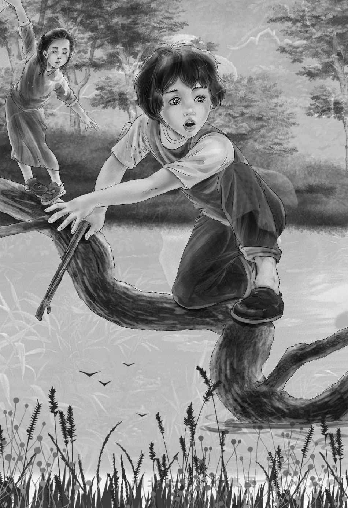

After the day in the lumber camp，the morning seemed to come in no time. Then men were awake and working before the sun. When everyone was dressed， Joe took the children to find the boss.
“I wonder if you ever heard of a man named Bill McGregor，” he said to the boss.
“He’s lost，” said Benny.
“Lost？ How old a man？”
“About seventy， now，” answered Joe. “He has been gone for many years. But we just found a letter saying he might have gone on Bear Trail.”
“This is part of Bear Trail，” said the boss.
“Yes，I know，” said Joe. “That’s why we came. This Bill was a very strong man，so I thought maybe he had worked years ago in lumber camps.”
“Well， I’ll ask my men，” said the boss. “I’ll find a way to let you know if I hear anything.”
“We are going to stop at Old Village，” said Joe. “If you do hear anything about this man，send someone down by canoe. I’ll pay for it.”
“I guess not！” laughed the boss. “Too bad if I couldn’t help you out. I’ll be glad to let you know anything I hear. You have two looks and a carry before you get to Old Village Lake.”
“Breakfast！” called Cookie， ringing the bell.Soon the men were eating great plates of quick bread. But Cookie had made beautiful brown pancakes for the visitors. They ate them with butter and brown sugar.
“I’ll help paddle today， Henry，” said Alice.
“Thanks，” said Henry. “We’ll get along faster that way.”
After breakfast everything was packed up again and put in the canoes. The children did not forget to thank Cookie and the kind lumber boss. Very soon they were on their way down the lake. The day was beautiful. They saw two interesting things. They paddled around the first look and saw a moose swimming to shore as fast as he could. Around the next look they saw a beautiful deer standing in the bushes.
“I like to go around these looks，” cried Benny.“I’m glad we came. Now what’s next， Joe？”
“Well，” answered Joe with a funny smile，“soon we’ll get out and carry the canoes.” He winked at Jessie.
“Can I carry one？” asked Benny.
“No， certainly not，” said Joe. ”Henry and Alice will carry one with the things still in it. That will be right side up. Then I will carry the other upside down on my head. You and Violet will have to carry some bags. Not as much fun as you think.
“You see this lake stops just ahead. But there is a very big lake not far from here. That’s the last lake for us.”
Henry and Joe soon pulled both canoes up on the shore. Alice took one end of a canoe under her arm， and Henry took the other. Benny laughed and laughed as Joe put the other canoe upside down on his head and walked off down the path. Benny and Violet came after with the bags.
It was not very far， and Alice was glad， because the canoe was heavy. Everyone sat down by the next lake to rest.
“What a beautiful day this is！” cried Jessie.She could not help it. The lake was the biggest one they had seen. The water was very blue and the trees were very dark green.
“Let’s rest a long time，” said Joe. “We have a long canoe trip ahead of us. There are not many good places to land for dinner.”
But at last he got up and they were on their way again. This time they did not paddle out to the middle of the lake. It was too far.
“Stay near land， Henry，” said Joe. “Then we won’t have so far to paddle.” But when he said this， he did not know how lucky they were going to be.
The two canoes were going along smoothly.Nobody thought of rain. Suddenly Joe looked up at the sky.
“Look up， Henry！” he called.
Just at that minute the wind began to blow.All of a sudden the smooth lake was very black.Soon it was all covered with small waves， then big ones.
For one long minute Joe stopped paddling and looked sharply along the shore. “Get to shore，Henry！” he shouted. “Just as fast as you can！Land between those two large trees.” He had to shout， for the wind was making a terrible noise.
They turned both canoes. By now they could hardly sit up. Alice paddled without a word.Henry’s canoe went first. Then it began to rain. The rain fell so fast that in one minute they were all wet through. But they thought of nothing but getting to shore.
“You can make it， Henry！”yelled Joe.“There is room for us both to land. Get over to one side！”
Henry and Alice paddled under the branches of the two trees and drove their canoe up into a very small opening.
“Get out quickly！” cried Alice. “Pull our canoe out of Joe’s way， so he can land， too.”They did so. Even Violet helped. Then they waved to Joe.
“OK！”he shouted as he began to paddle straight in. Just then a big wave hit his canoe sideways and washed the bags of food and dishes into the lake.
“Never mind！” he yelled. “Let them go，Benny， and sit still！”
Then with one strong push he drove his canoe up beside Henry’s. He looked at his young wife，who was very white.
“Thank goodness！” said Alice. “We are all safe！” She put her arm around Violet who was shaking with fright.
“We’ll have to do something right away，”said Henry， taking one look at his gentle little sister. “We’re really in a fix. All our food is gone.”
“Are we going to starve， Joe？” asked Benny.
“Starve？ No. But I guess we are going to be very hungry.”
“Just almost starve，” said Benny.
“Let’s not stand here in the rain talking，” said Jessie. “We still have our tents and our blankets. And we still have our shelter-half. We must think of some way to get Violet dry and warm.”
“I’m all right，” said Violet. But she did not look all right. She was still shaking.
Henry and Joe looked around. They could see nothing but trees and bushes. There was no path. There was no other open place.
“Not a very good place to land， or make a camp，” said Henry， much worried.
“All woods and bushes，” said Benny. “But we could cut down some trees and bushes. We still have our axe.”
“Thank goodness for that，” said Henry.“Let’s have it.”
“Don’t cut here，” said Joe. “The ground is too wet for a camp. Let’s try to find a better place. You go that way， Henry， and I’ll go this. Hunt around， and don’t get lost.”
Before long they both came crashing back. But now Joe was smiling.
“Water！”he shouted. “There’s a spring up there， and quite a good place. We can make it do. We’ll have to. We won’t need to cut down many bushes and there is room for the tents and a fire.”
“How can you build a fire in the rain？” asked Benny.
“Don’t forget we have the shelter-half，” said Joe. “You bring in some big stones and some dry wood， and you’ll see.”
“All the wood is wet，” said Benny.
“Not on the under side it isn’t，” Henry told him. “Look at Jessie， with that axe！”
As fast as Jessie cut down bushes， Alice pulled them away. Joe and Henry put up Mr. Hill’s shelter-half as fast as they could. Soon Joe had a fire going. He made Violet sit down before it，putting a blanket over her knees.
“Thank you， Joe，” said the little girl. “The fire feels so nice and warm.” She did not shake any more.
“Good！” cried Henry. “That shelter-half is wonderful. It keeps the wind off the fire， too.”
“Can I go back to the canoes and see if I can find any food？” asked Benny.
“Good boy！” said Joe. “A fine idea. You may be a Maine guide yet.”
“I’ll go with you， Benny，” said Alice suddenly， after a look at Joe. “We might even get hold of one bag.”
Off they went， while Joe and Henry put up the tents. The big trees kept off a lot of the rain，and the inside of the tents was quite dry.
Jessie took the blanket rolls inside before she took off the straps. “Anyway，” she said， “we have a warm， dry place to sleep， even if we don’t have anything to eat.”
Joe was thinking. He was worried. He knew it would be hard for the children to go a whole day and night without eating.
Meanwhile two people were really having fun-Alice and Benny. They could see the one bag of food as it lay under the water not far from shore. The wind was blowing so hard that every wave brought the bag nearer to them.
“If I could only get hold of it！” said Benny. “It has potatoes and tin cans in it. Let’s have the fishing rod.”
“You’d break it，” said Alice. “Here’s a long stick.”

“Please let me walk into the lake， Alice，”begged Benny. “I’m as wet as I can be already. I don’t have to go in very far.”
“Well， all right，” said Alice slowly. “It isn’t very deep here. Go easy， now.”
What a funny feeling that was.Benny stepped into the lake very slowly. He went in up to his knees. He had the big stick in one hand and he held the branches of the trees with the other. He tried and tried to get hold of the bag. He did not give up until he had hooked the stick into the handle of the bag. Then he pulled carefully. The bag almost floated. Then he caught it with his hand and pulled it to shore.
“Oh， Benny， dear！” cried Alice. She was so glad she almost cried. “How glad Joe will be！”
They both took hold of the bag and pulled it to camp.
“Look here！” shouted Benny. “Potatoes！”
“Wonderful！ Potatoes！” they all said. They opened the bag and took out what was left. Their flour was gone， the salt was gone， the sugar was gone. But there were the potatoes and all the cans of milk.
“No dishes，” said Benny. “They were all in the other bag.”
“Never mind dishes！” cried Violet. “Just think of having potatoes， Benny. We can cook potatoes without any dishes.”
It was long past noon， and everyone began to work.
“Roll the potatoes into the fire， right here，” said Joe. “They will burn， but never mind. We have to eat something. We can put spring water in the milk and drink that， too.”
“How can we put spring water into a can of milk？” Benny asked. “It’s full of milk already.”
Henry had an idea. He rushed off to his own canoe. Soon he was back with the water pail and his big knife. “Now we’ve got a dish，” he said. “We can put the milk and water in this pail， and we’ll open the milk cans with this knife.”
“Then the cans will be empty，” broke in Benny.
“And we can use them for cups，” finished Jessie.
“Well，” said Benny， “anyway， we’re not starving. Just almost starving.”